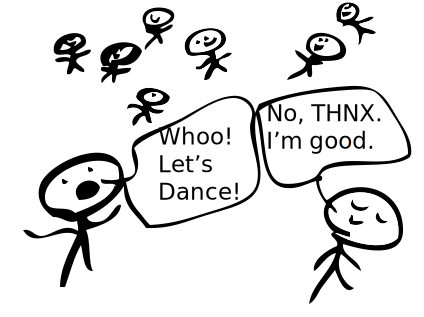

experiment data
Check back October 5, 2015.
about this experiment
Have you ever wondered why music makes you want to move? It’s because nearly everyone is sensitive to the differences in the pace or structure of music. Even infants can detect differences in rhythmic patterns!
How? Researchers are not completely sure, but they have found evidence of a network of brain regions that processes beats, and therefore helps us perceive rhythm. For example, two brain regions commonly associated with movement, the supplementary motor area (SMA) and the basal ganglia, are more active when listening to simple rhythms than complex rhythms.
I am investigating the brain’s preferences for rhythm by presenting chains of participants with rhythmic sequences, where the reproduced sequence of one participant serves as the input sequence for the next participant in the chain, and then analyzing whether the chain converges to a preferred pace or rhythmic structure. Each passage through a link in the chain magnifies the change that one individual introduces. The mathematical model I’ll use to analyze the chains will enable me to make inferences about underlying tempo or rhythmic preferences in the brain based on where the chains seem to converge. Together with pre-existing imaging and behavioral data about rhythm perception, this modeling has the potential to reveal patterns of preferences previously unexplored in earlier experiments.
Hannon, E. E., & Trehub, S. E. (2005). Psychological Science, 16(1), 48-55.
Grahn, J., & Brett, M. (2007). Cognitive Neuroscience, 19(5), 893-906.

Image from Grahn, J. A., Henry, M. J., & McAuley, J. D. (2011)
Grahn, J. A., Henry, M. J., & McAuley, J. D. (2011). Neuroimage, 54(2), 1231-1243.
Grahn, J. A., & Rowe, J. B. (2009). The Journal of Neuroscience, 29(23), 7540-7548.
detailed background
Data from this experiment will help us better understand how the brain processes rhythm. Specifically, it will help to answer the following research questions:
How do the brain’s hidden preferences for rhythm change what you experience?
Perceptual biases are “hidden” preferences that are determined by inherent constraints of the brain. Because a lot of activity in the brain is periodic, it can be synchronized by stimulation from the environment. Take for example, the circadian rhythm, our biological rhythm that lasts about 24 hours. The length of the circadian rhythm in humans is related to the period of oscillating neurons in the suprachiasmatic nucleus (SCN), where daylight in the environment synchronizes the activity in these neurons to the length of a day. However, these neurons have inherent periods that makes some synchronizations difficult. For example, synchronizing to a day on Jupiter, which is equivalent to only 9 hours on Earth, or to Mercury, which is about 1407.5 Earth hours, would be much more difficult.
So, just like the length of a pendulum determines its period of oscillation, physical properties of brain areas such as the SCN determine the periods that these areas can synchronize with. Similarly, neurons in beat-processing areas of the brain may have a range of preferred periods that are able to synchronize better with certain paces, or tempos, in the environment. Hence, pop music or other music we find easier to dance to tends to have a tempo that matches this preferred period.
A similar explanation, based on neural oscillatory activity, may apply to preferences for more complex rhythmic patterns. This explanation attributes preferences for rhythmic patterns or meters to resonance between activity in connected brain areas. Resonance refers to communication via neural oscillations between connected brain areas. Similar to the explanation above of tempo preferences, this view says that internal activity in the brain is cyclic. This cyclic activity behaves according to the laws of oscillatory dynamical systems. The pendulum is one example of a dynamical system. The motion of a spring, planetary orbits, or the synchronization of fireflies in the Great Smoky Mountains are additional examples. Dynamical systems are described by states that evolve over time. For example, a swinging pendulum is passing through many states as it swings. It’s position at the top of a swing or the bottom is called a “state” and can be described mathematically. The passage through various states - from top of swing to bottom, and back again - can also be mathematically described.
Some states are more stable than others. For instance, a pendulum’s stable, equilibrium state is the bottom of its swing: you would never see a pendulum come to a stop at the top of its swing. From this viewpoint, preferred rhythms correspond to stable states of the system. Resonance between oscillators keeping track of various periods of stimulation make some period ratios easier to track (more stable) than others. For instance , a 1:1 ratio of durations is more stable than a 5:7 ratio.
Hannon, E. E., Soley, G., & Levine, R. S. (2011). Developmental Science, 14(4), 865-872.
McAuley, J. D., Jones, M. R., Holub, S., Johnston, H. M., & Miller, N. S. (2006). .Journal of Experimental Psychology: General, 135(3), 348.
Hannon, E. E., & Trehub, S. E. (2005). Psychological Science, 16(1), 48-55.
Large, E. W., & Kolen, J. F. (1994). Connection Science, 6(2-3), 177-208.
Treffner, P. J., & Turvey, M. T. (1993). Journal of Experimental Psychology: Human Perception and Performance, 19(6), 1221.
How do tempo and meter preferences differ for auditory and visual rhythmic sequences?
In day to day life, we perceive auditory and visual events to happen in time with each other. For example, when someone is speaking, the visual signal we receive from moving lips, gestures, or facial expressions usually appears to sync up with their speech or the auditory signal. In fact, it seems very obvious and unsettling when this is untrue; for instance, when the audio and video on a TV are mismatched. Some previous research supports what our day-to-day intuitions suggest: that auditory and visual processing are linked. For example, one previous study demonstrated that auditory brain areas can be recruited to process visual rhythmic patterns.
Yet, previous research has demonstrated that auditory and visual perception are separable. For instance, people have different preferences when they are asked to tap along with visual patterns vs. auditory ones; further, people tend to be worse at discriminating timing perturbations in visual patterns than in auditory patterns. There is an asymmetry in the influence of the two modalities on each other. Other research has demonstrated that auditory rhythms influence our perception of visual patterns, but not vice versa.
The mystery here is why in some cases, visual and auditory processing appear to be distinct, and yet other research (and our everyday experience) suggests otherwise, that audition and vision interact or work in tandem.
Hove, M. J., Fairhurst, M. T., Kotz, S. A., & Keller, P. E. (2013). Neuroimage, 67, 313-321.
Grahn, J. A., Henry, M. J., & McAuley, J. D. (2011). Neuroimage, 54(2), 1231-1243.
Miller, J. E., Carlson, L. A., & McAuley, J. D. (2012). Psychological Science.
Repp, B. H. (2003). Journal of Motor Behavior, 35(4), 355-370.
Methods
Similar to a game of telephone, each participant is presented with a rhythm that was previously reproduced by someone else, just like their reproduction is used as the input for the next participant. Therefore, each person’s reproduction influences the next rhythm that will be heard/seen and reproduced in the chain.
This method is called serial reproduction and it has been used by psychologists as early as 1903, one of them being Sir Frederic Charles Bartlett, who used it to study how people’s memory for stories and pictures was shaped by their cultural experiences.
In one study, Bartlett presented his first participant in a chain with an Egyptian hieroglyph and asked him to reproduce it from memory. He then presented that reproduction to the next person in the chain and so on. With each subsequent reproduction, the hieroglyph started to resemble an owl and then became a cat. This was interpreted as a memory bias toward culturally familiar stimuli. In this case, people were more familiar with cats than with Egyptian hieroglyphs.
Likewise, in the case of rhythms, we should expect similar distortions because our brains have certain biases for rhythms we have experienced most often or are hard-wired to prefer.

Image from Xu, J. & Griffiths, T. L. (2010)

Bartlett, F. (1932). Cambridge: Cambridge University Press.
Xu, J. & Griffiths, T. L. (2010). Cognitive Psychology, 60(2):107--126.
Analysis
To analyze this data, I will use a mathematical model that will quantify how each reproduction in the chain distorts the information that is passed from person to person. Specifically, this model will characterize each person’s prior experiences and expectations in the form of a prior probability distribution that describes how some things in the world are more likely than other things.
In the case of rhythm, the most probable rhythms are the ones we have experienced most often or that our brains are hard-wired to prefer. When we hear and then have to remember a rhythm, our memories are imperfect. We fill in the blanks with the most likely option — that is, we draw from our prior distributions to strengthen our memories. When enough people do this who have similar experiences and expectations, each passage through a reproduction in the chain will nudge the rhythm closer and closer to what we expect, regardless of what the starting point was.
Thus, several reproductions later, the final rhythm will converge on a standard preferred tempo or preferred meter, allowing us to infer the brain’s assignment of probabilities to possible rhythms in the world.
McAuley, J. D., Jones, M. R., Holub, S., Johnston, H. M., & Miller, N. S. (2006). Journal of Experimental Psychology: General, 135(3), 348.
Hannon, E. E., & Trehub, S. E. (2005). Psychological Science, 16(1), 48-55.
Parncutt, R. (1994). Music Perception, 409-464.
Treffner, P. J., & Turvey, M. T. (1993). Journal of Experimental Psychology: Human Perception and Performance, 19(6), 1221.
Xu, J. & Griffiths, T. L. (2010). Cognitive Psychology, 60(2):107--126.
about the artists
Elisa Kim Fromboluti is a graduate student in the Timing, Attention, and Perception lab at Michigan State University in East Lansing, MI. Working with Dr. Devin McAuley, she studies how the brain uses and responds to timing and rhythmic cues in the environment, such as those found in speech and music.
You can contact her at ekfromboluti@gmail.com


Matthew Fromboluti is an architect in Ann Arbor, Michigan. He enjoys building things, especially out of plastic and steel.